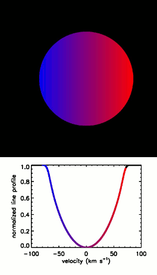

About Me
I am currently a Staff Scientist at Las Cumbres Observatory. My research interests primarily revolve around observational studies of exoplanets.
I grew up in the Jemez Mountains of Northern New Mexico. I obtained my B.A. in astronomy and physics from Wesleyan University in 2011, having spent a semester abroad at the University of St. Andrews, Scotland. I attended graduate school in astronomy at the University of Texas at Austin; I obtained my M.A. in 2013 and my Ph.D. in 2016, both under the supervision of Prof. William Cochran. After that I spent three years as the Columbus Prize Postdoctoral Fellow at the Ohio State University (and later led a successful campaign to rename the fellowship, due to Columbus' general misdeeds).
Outside of academia I enjoy hiking and jogging (and generally being outdoors), reading, and board games. As if all the above wasn't enough to keep me busy, I am also an aspiring science fiction/fantasy writer (nothing published yet, but stay tuned...)
My family has a long history in the STEM fields. My grandfather, Walter Goad, co-founded GenBank, one of the world's first nucleotide sequence databases; my grandmother, Maxine Goad, authored the first state-level groundwater quality rules in the nation and devoted her career to protecting groundwater; and my great-grandfather, Max Steineke, was principally responsible for the discovery of oil in Saudi Arabia.
Research
My research interests include: the use of Doppler tomography (aka Doppler imaging) to address problems in planetary and stellar astrophysics; the discovery and characterization of exoplanetary systems; and the effects of interstellar and interplanetary environments upon planetary climate and habitability. My focus is primarily observational, and I have experience working with high-resolution spectroscopy, and photometry from both space-based and ground-based facilities.
Current Research
Doppler Tomography
My major research direction centers around the use of the technique of Doppler tomography. I will provide a brief introduction to the technique here, but please see my paper on Kepler-13 Ab for a more technical description.
Doppler tomography relies upon the fact that all stars rotate to some degree. One hemisphere of the star will be rotating towards the observer, and so the light from that hemisphere will be blueshifted, whereas the other will be rotating away, and so its light will be redshifted. Each surface element of the star will contribute to the overall spectrum of the star, but its contribution will be Doppler shifted due to the rotation. Thus, the star's spectral lines will exhibit rotational broadening-the star's spectral lines will be wider than one might naively expect.
Now, what happens if a planet transits across the star? It will block regions of the stellar disk with a small range of radial velocities, causing a smaller contribution to the line profile at these velocities and perturbing the line shape-this manifests as a "bump" in the line profile. This is known as the Rossiter-McLaughlin Effect. As the planet moves across the stellar disk during the transit, the bump moves across the line profile in a corresponding manner. As can be seen in the animations below, the manner in which this line profile perturbation moves depends upon the angle between the stellar spin axis and the planetary orbital plane (as projected on the plane of the sky), known as the spin-orbit misalignment and typically denoted λ. Detection of this effect for a transiting planet candidate allows me to validate the candidate as an actual planet, rather than an astrophysical false positive such as a background eclipsing binary blended with a brighter foreground star, as it shows that the transiting object orbits the target star. Radial velocity observations are also required to exclude the possibility that the transiting object is actually a late M dwarf or a brown dwarf rather than a planet; this can be accomplished with a radial velocity precision of only about 1 km/s. One major focus of my Doppler tomography research is to confirm transiting planet candidates around rapidly rotating stars. Doppler tomography is most effective for stars with vsini > 20 km/s, but very high resolution spectrographs (R > 100,000) allow the detection of the line profile perturbation even for stars rotating as slowly as ~3 km/s (Collier Cameron et al. 2010).
Left to right: Doppler tomographic transit signatures of a planet on a prograde orbit, a retrograde orbit, and a polar orbit. Note the qualitative differences in the motions of the transit signatures during the transit.
The spin-orbit misalignment is important in part because it is a probe of planetary migration processes. This parameter has been measured for many hot Jupiters and a few smaller and longer-period planets, a significant number of which have highly inclined orbits. Winn et al. (2010) showed that hot Jupiters with highly misaligned orbits preferentially orbit stars with Teff > 6250 K. Since then a great deal of theoretical effort has been invested in explaining the origins of these misalignments, but to date observational constraints have lagged behind the theory. Thus, a major effort of my research is to use Doppler tomographic measurements of spin-orbit misalignments (particularly for planets orbiting hot stars, and warm Jupiters) to distinguish among the different misalignment mechanisms.
To date I have published Doppler tomographic spin-orbit misalignment measurements for six planets, and contributed to such measurements for three others. You can see animations of all of these systems on the Doppler Tomography Gallery page of this site.
Exoplanet Detection
I am also interested in the discovery of new exoplanets, in particular transiting planets. I am a member of three planet search collaborations: KELT, KESPRINT, and the McDonald Observatory Planet Search.
I am a member of the KELT planet search team, where I have put my Doppler tomographic expertise to good use; KELT observes brighter stars than most other ground-based transiting planet searches, and as a result has a higher proportion of hot stars which are amenable to Doppler tomography. I lead our discovery of KELT-21 b, a hot Jupiter transiting the most rapidly rotating star known to host such a planet. I also contributed to our discoveries of KELT-9 b, KELT-19 Ab, KELT-20 b, and KELT-22 Ab.
I am a member of the KESPRINT collaboration to find and confirm transiting planets with Kepler's K2 extended mission, and the upcoming TESS mission. I lead our paper announcing the discovery of the hot Jupiters K2-29 b and K2-30 b, and a new hot Jupiter and warm Saturn (Johnson et al., submitted). I have also assisted with our observations and analysis on several other transiting planets: K2-99 b, HD 3167 b and c, K2-131 b, and K2-141 b.
I am also a member of the McDonald Observatory Planet Search group, an ongoing radial velocity survey using the 2.7 m Harlan J. Smith Telescope at McDonald Observatory. During my time in graduate school I logged nearly 70 nights observing for this program. I lead our paper analyzing our data on the nearby planet host star HD 219134, where we identified a 11.7-year stellar activity cycle, and also found a stellar activity signature due to rotation at a period of 22.8 days, suggesting that the previously claimed planet HD 219134 f at that period may be a false positive due to activity. I also contributed to our discovery of Jupiter analogs around ψ1 Dra B and HD 95872, and our mass measurement of the directly-imaged brown dwarf Gl 758 B.
Past Research
Interstellar Medium
In this project I constructed the first three-dimensional map of interstellar medium clouds within the Kepler prime mission search volume. The Kepler mission searched for extrasolar planets using the transit method in a field of view located in the constellations Lyra and Cygnus. The interstellar environment can have consequences for the climate of planets, and so I placed preliminary constraints on these parameters for nearby Kepler planets. I conducted this work in collaboration with Prof. Seth Redfield (Wesleyan University) and Prof. Adam Jensen (University of Nebraska-Kearney). See my paper.
Exoplanet Transit Timing
During the spring of 2009 and from summer 2010 until May 2011 I worked with Prof. Seth Redfield (Wesleyan University) on the Wesleyan Transiting Exoplanet Program (WesTEP), a project to utilize the 0.6-m (24-in) Perkin Telescope at Wesleyan University's Van Vleck Observatory to observe the transits of known transiting exoplanets, and refine their parameters. I focused on searches for and analysis of transit timing variations (TTVs).
Circumstellar Envelopes
In the summer of 2009 I participated in the REU program at MIT Haystack Observatory. I worked with Dr. Lynn Matthews to reduce and analyze Very Large Array and Green Bank Telescope H I 21-cm line data of the circumstellar envelopes of asymptotic giant branch stars. I worked with data on X Herculis, R Pegasi, and Y Ursae Majoris.
The Milky Way's Thick Disk
My first research experience came through the Keck Northeast Astronomy Consortium REU, where I spent the summer of 2008 at Vassar College working with Dr. Allyson Sheffield on a project to search for kinematic and chemical substructures or gradients within the Milky Way's thick disk. See our paper.
Doppler Tomography Gallery
Animated summary of the Doppler tomographic results from papers that I have been involved with to date. The planet-to-star radius ratios, line widths, and transit durations are to scale, but the absolute stellar and planetary radii are not to scale from system to system. For WASP-33 b successive transits depict the path of the planet in 2008 and 2014 I found in my 2015 paper.
(Johnson et al. 2014)
(Johnson et al. 2015)

(Johnson et al. 2017)
(Johnson et al. 2017)

(Johnson et al. 2017)

(Johnson et al. 2018)
(Gaudi et al. 2017)
(Siverd et al. 2018)
(Lund et al. 2017)
Publications
Access my bibliography on ADS here.
Theses
Johnson, M. C. "Spin-Orbit Misalignments, Planet Candidate Validation, and Nodal Precession via Doppler Tomography" 2016, Ph.D. Thesis, The University of Texas at Austin University of Texas Library
Johnson, M. C. "Doppler Tomographic Observations of Exoplanetary Transits" 2013, Masters Thesis, The University of Texas at Austin University of Texas Library
Johnson, M. C. "The Shadows of Distant Worlds: Exoplanetary Transit Timing Using the Perkins Telescope" 2011, Honors Thesis, Wesleyan University WesScholar
Refereed Publications
Zhou, G., Huang, C. X., Bakos, G. A., Hartman, J. D., et al. (M. C. Johnson 26th of 65 authors) "Two New HATNet Hot Jupiters around A Stars, and the First Glimpse of the Occurrence Rate of Hot Jupiters from TESS" 2019, AAS Journals, submitted (arXiv:1906.00462) ADS arXiv
Johns, D., Reed, P. A., Rodriguez, J. E., Pepper, J., et al. (M. C. Johnson 40th of 57 authors) "KELT-23b: A Hot Jupiter Transiting a Near-Solar Twin Close to the TESS and JWST Continuous Viewing Zones" 2019, AAS Journals, submitted (arXiv:1903.00031) ADS arXiv
Labadie-Bartz, J., Rodriguez, J. E., Stassun, K. G., Ciardi, D. R., et al. (M. C. Johnson 6th of 56 authors) "KELT-22Ab: A Massive, Short-Period Hot Jupiter Transiting a Near-Solar Twin" 2019, ApJS, 240, 13 paper ADS arXiv
Collins, K. A., Collins, K. I., Pepper, J., Labadie-Bartz, J., et al. (M. C. Johnson 12th of 109 authors) "The KELT Follow-Up Network and Transit False Positive Catalog: Pre-Vetted False Positives for TESS" 2018, AJ, 156, 234 paper ADS arXiv
Addison, B. C., Wang, S., Johnson, M. C., Tinney, C. G., Wright, D. J., & Bayliss, D. "Stellar Obliquities & Planetary Alignments (SOPA) I. Spin-Orbit Measurements of Three Transiting Hot Jupiters: WASP-72b, WASP-100b, & WASP-109b" 2018, AJ, 156, 197 paper ADS arXiv
Strassmeier, K. G., Ilyin, I., Weber, M., Jarvinen, A., et al. (M. C. Johnson 11th of 13 authors) "Want a PEPSI? Performance Status of the Recently Commissioned High-Resolution Spectrograph and Polarimeter for the 2x8.4m Large Binocular Telescope" 2018, Proc. SPIE, 10702, 1070212 paper ADS
Johnson, M. C., Dai, F., Justesen, A. B., Gandolfi, D., et al. "K2-260 b: a Hot Jupiter Transiting an F Star, and K2-261 b: a Warm Saturn around a Bright G Star" 2018, MNRAS, in press ADS arXiv
Eigmueller, Ph., Csizmadia, Sz., Endl, M., Gandolfi, D., et al. (M. C. Johnson 10th of 12 authors) "A Transiting M-Dwarf Showing Beaming Effect in the Field of Ruprecht 147" 2018, MNRAS, in press paper ADS
Furlan, E., Ciardi, D. R., Cochran, W. D., Everett, M. E., et al. (M. C. Johnson 20th of 25 authors) "The Kepler Follow-Up Observation Program. II. Stellar Parameters from Medium- and High-Resolution Spectroscopy" 2018, ApJ, 861, 149 paper ADS arXiv
Barragan, O., Gandolfi, D., Dai, F., Livingston, J., et al. (M. C. Johnson 29th of 35 authors) "K2-141 b: A 5-MEarth Super-Earth Transiting a K7V Star Every 6.7 Hours" 2018, A&A, 612, 95 paper ADS arXiv
Bowler, B. P., Dupuy, T. J., Endl, M., Cochran, W. D., et al. (M. C. Johnson 13th of 14 authors) "Orbit and Dynamical Mass of the Late-T Dwarf GJ 758 B" 2018, AJ, 155, 159 paper ADS arXiv
Zhou, G., Rappaport, S., Nelson, L., Huang, C. X., et al. (M. C. Johnson 14th of 31 authors) "Occultations from an Active Accretion Disk in a 72-Day Detached Post-Algol System Detected by K2" 2018, ApJ, 854, 109 paper ADS arXiv
Johnson, M. C., Rodriguez, J. E., Zhou, G., Gonzales, E. J., et al. "KELT-21b: A Hot Jupiter Transiting the Rapidly-Rotating Metal-Poor Late-A Primary of a Likely Hierarchical Triple System" 2018, AJ, 155, 100 paper ADS arXiv
Siverd, R. J., Collins, K. A., Zhou, G., Gaudi, B. S., et al. (M. C. Johnson 6th of 47 authors) "KELT-19Ab: A P~4.6 Day Hot Jupiter Transiting a Likely Am Star with a Distant Stellar Companion" 2018, AJ, 155, 35 paper ADS arXiv
Dai, F., Winn, J. N., Gandolfi, D., Wang, S. X., et al. (M. C. Johnson 15th of 54 authors) "The Discovery and Mass Measurement of a New Ultra-Short-Period Planet: K2-131b" 2017, AJ, 154, 226 paper ADS arXiv
Lund, M. B., Rodriguez, J. E., Zhou, G., Gaudi, S., et al. (M. C. Johnson 6th of 49 authors) "KELT-20b: A Giant Planet with a Period of P~3.5 Days Transiting the V~7.6 Early A Star 185603" 2017, AJ, 154, 194 paper ADS arXiv
Johnson, M. C., Cochran, W. D., Addison, B. C., Tinney, C. G., & Wright, D. J. "Spin-Orbit Misalignments of Three Jovian Planets via Doppler Tomography" 2017, AJ, 154, 137 paper ADS arXiv
Gandolfi, D., Barragan, O., Hatzes, A. P., Fridlund, M., et al. (M. C. Johnson 7th of 44 authors) "The Transiting Multi-Planet System HD3167: A 5.7 MEarth Super-Earth and a 8.3 MEarth Mini-Neptune" 2017, AJ, 154, 123 paper ADS arXiv
Gaudi, B. S., Stassun, K. G., Collins, K. A., Beatty, T. G., et al. (M. C. Johnson 15th of 60 authors) "A Giant Planet Undergoing Extreme-Ultraviolet Irradiation by Its Hot Massive-Star Host" 2017, Nature, 546, 514 paper ADS arXiv
Mann, A. W., Dupuy, T., Muirhead, P. S., Johnson, M. C., et al. "The Gold Standard: Accurate Stellar and Planetary Parameters for Eight Kepler M Dwarf Systems Enabled by Parallaxes" 2017, AJ, 153, 267 paper ADS arXiv
Smith, A. M. S., Gandolfi, D., Barragan, O., Bowler, B., et al. (M. C. Johnson 22nd of 33 authors) "K2-99: a Subgiant Hosting a Transiting Warm Jupiter in an Eccentric Orbit and a Long-Period Companion" 2016, MNRAS, 464, 2708 paper ADS arXiv
Mann, A. W., Newton, E. R., Rizzuto, A. C., Irwin, J., et al. (M. C. Johnson 15th of 17 authors) "Zodiacal Exoplanets in Time (ZEIT) III: A Short-Period Planet Orbiting a Pre-Main-Sequence Star in the Upper Scorpius OB Association" 2016, AJ, 152, 61 paper ADS arXiv
Johnson, M. C., Gandolfi, D., Fridlund, M., Csizmadia, Sz., et al. "Two Hot Jupiters from K2 Campaign 4" 2016, AJ, 151, 171 paper ADS arXiv
Johnson, M. C., Endl, M., Cochran, W. D., Meschiari, S., et al. "A 12-Year Activity Cycle for the Nearby Planet Host Star HD 219134" 2016, ApJ, 821, 74 paper ADS arXiv
Mann, A. W., Gaidos, E., Mace, G. N., Johnson, M. C., et al. "Zodiacal Exoplanets In Time (ZEIT) I: A Neptune-Sized Planet Orbiting an M4.5 Dwarf in the Hyades Star Cluster" 2016, ApJ, 818, 46 paper ADS arXiv
Endl, M., Brugamyer, E. J., Cochran, W. D., MacQueen, P. J., et al. (M. C. Johnson 10th of 19 authors) "Two New Long-Period Giant Planets from the McDonald Observatory Planet Search and Two Stars with Long-Period Radial Velocity Signals Related to Stellar Activity Cycles" 2016, ApJ, 818, 34 paper ADS arXiv
Johnson, M. C., Cochran, W. D., Collier Cameron, A., & Bayliss, D. "Measurement of the Nodal Precession of WASP-33 b via Doppler Tomography" 2015, ApJL, 810, 23 paper ADS arXiv erratum
Johnson, M. C., Redfield, S., & Jensen, A. G. "The Interstellar Medium in the Kepler Search Volume" 2015, ApJ, 807, 162 paper ADS arXiv
Johnson, M. C., Cochran, W. D., Albrecht, S., Dodson-Robinson, S. E., Winn, J. N., & Gullikson, K. "A Misaligned Prograde Orbit for Kepler-13 Ab via Doppler Tomography" 2014, ApJ, 790, 30 paper ADS arXiv
Matthews, L. D., Le Bertre, T., Gerard, E., & Johnson, M. C. "An HI Imaging Survey of Asymptotic Giant Branch Stars" 2013, AJ, 145, 97 paper ADS arXiv
Stark, C. C., Boss, A. P., Weinberger, A. J., Jackson, B. K., et al. (M. C. Johnson 7th of 13 authors) "A Search for Exozodiacal Clouds with Kepler" 2013, ApJ, 764, 195 paper ADS arXiv
Sheffield, A. A., Majewski, S. R., Johnston, K. V., Cunha, K., et al. (M. C. Johnson 10th of 13 authors) "Identifying Contributions to the Stellar Halo from Accreted, Kicked-out, and In Situ Populations" 2012, ApJ, 761, 161 paper ADS arXiv
Matthews, L. D., Libert, Y., Gerard, E., Le Bertre, T., Johnson, M. C., & Dame, T. M. "H I Observations of the Asymptotic Giant Branch Star X Herculis: Discovery of an Extended Circumstellar Wake Superposed on a Compact High-Velocity Cloud" 2011, AJ, 141, 60 paper ADS arXiv
Conference Proceedings
Orosz, J. A., Welsh, W. F., Short, D. R., Endl, M., Cochran, W. D., Johnson, M. C., Mills, S., Fabrycky, D., Haghighipour, N., & Windmiller, G. "A Transiting Circumbinary Planet in KIC 10753734" 2016, BAAS, 228, 316.07 ADS
Johnson, M. C. "Planet Candidate Validation and Spin-Orbit Misalignments from Doppler Tomography" 2016, BAAS, 227, 306.01D ADS
Johnson, M., & Cochran, W. "Validation and Characterization of Planets around Hot Stars with Doppler Tomography" 2015, Extreme Solar Systems III, 114.19 ADS
Cochran, W. D., Endl, M., Johnson, M. C., Lee, B.-C., Park, C., Han, I., Rauer, H., Cabrera, J., Csizmadia, Sz., Paetzold, M., Yong, D., Asplund, M., & Hatzes, A. P. "PICK2: Planets in Clusters with K2" 2015, DPS, 417.02 ADS
Johnson, M. C., Cochran, W. D., & Endl, M. "Validation of a Warm Jupiter Transiting a Rapidly Rotating Star" 2015, BAAS, 225, 306.04 ADS
Johnson, M. C., & Cochran, W. D. "Doppler Tomographic Observations of Kepler-13b" 2014, Proceedings of the International Astronomical Union Symposium 299, 295 paper ADS
Johnson, M. C., & Cochran, W. D. "Doppler Tomographic Observations of Exoplanet Transits" 2013, BAAS, 221, 343.07 ADS
Johnson, M. C., Jensen, A. G., & Redfield, S. "The Interstellar Medium in the Kepler Search Volume" 2012, BAAS, 219, 349.16 ADS
Schaeffer, J., Johnson, M. C., & Redfield, S. "New Data from the Wesleyan Transiting Exoplanet Program" 2012, BAAS, 219, 245.05 ADS
Matthews, L. D., Gerard, E., Johnson, M. C., Le Bertre, T., Libert, Y., & Reid, M. J. "Tails of Stellar Mass-Loss: VLA Imaging of H I in Circumstellar Envelopes" 2011, in Why Galaxies Care about AGB Stars II: Shining Examples and Common Inhabitants, ed. F. Kerschbaum, T. Lebselter, & R. F. Wing, San Francisco: Astronomical Society of the Pacific, 305 paper ADS
Johnson, M. C., Leiner, E. M., & Redfield, S. "First Results from the Wesleyan Transiting Exoplanet Program" 2011, BAAS, 217, 343.05 ADS
Johnson, M. C. "First Results from the Wesleyan Transiting Exoplanet Program" 2010, Proceedings of the 2010 Undergraduate Symposium on Research in Astronomy, T. Balonek, ed., in press
Johnson, M. C., & Matthews, L. D. "Very Large Array Observations of Circumstellar Envelopes in the H I 21-cm Line" 2010, BAAS, 215, 416.02 ADS
Matthews, L. D., Johnson, M. C., Gerard, E., Le Bertre, T., & Libert, Y. "HI Mapping of the Circumstellar Environment of X Her: An AGB Star Associated with a High-Velocity Cloud?" 2010, BAAS, 215, 416.01 ADS
Johnson, M. C. "H I as a Tracer of Circumstellar Envelopes" 2009, Proceedings of the 2009 Undergraduate Symposium on Research in Astronomy, D. Cohen, ed., 39
Johnson, M., Kaplan, E., & Miller, J. "A Spectroscopic Study of the Structure of the Milky Way" 2008, Proceedings of the 2008 Undergraduate Symposium on Research in Astronomy, E. C. Moran, ed., 1
Media/Miscellaneous
The Astronomer's Oath
(A parody of the Oath of the Night's Watch from George R. R. Martin's A Song of Ice and Fire novels)
Night gathers, and now my watch begins. It shall not end until the observing run is over. I shall make no light, miss no targets, lose no data. I shall fear no clouds and expect no citations. I shall live and sleep on the mountain. I am the geek in the darkness. I am the watcher in the dome. I am the gloves that gird against the cold, the monitor that shows my data, the telescope that pierces the darkness, the mind that ranges the realms of science. I pledge my life and honor to astronomy, for this night and all nights to come.
Writing
During my final year in grad school I served as a volunteer for McDonald Observatory's Ask an Astronomer website, answering questions from the public with short essay answers. I answered these questions:
Why do comets not get captured by Earth’s gravity during a close flyby?
Can a hypothetical Planet X whip around from behind the Sun in a 3600-years orbit?
I blogged during my semester abroad in Scotland, Spring 2010 at Craving Chile by the Firth of Forth*
Media Appearances
06/2017 I contributed to the discovery of KELT-9 b, the hottest planet ever discovered; an animation I produced was used in the article on Eos, and the discovery was featured in media outlets including the Washington Post, BBC, New Scientist, and Gizmodo
08/2015 Distant worlds could be sheltering in a bubble around their star, in New Scientist
02/2011 Johnson '11 Honored for Exoplanet Research, in the Wesleyan Connection (Erratum: I am not actually, nor was I at the time, a member of the Wide Angle Search for Planets (WASP) team.)
Links
Contact Me
email: mjohnson at lco dot global